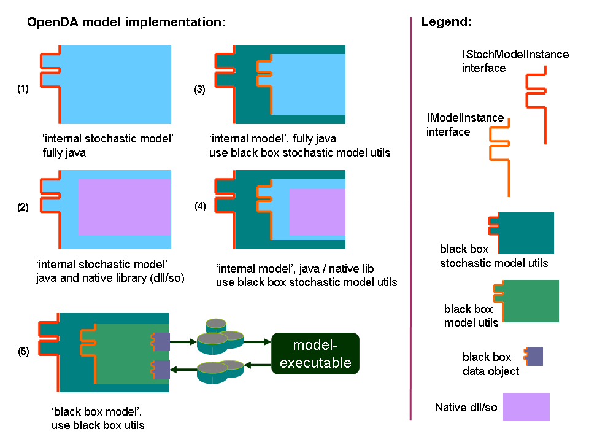

OpenDA tutorial: Introduction
OpenDA is a generic environment for parameter calibration and data assimilation application. It provides a platform, where
interchange of algorithms as well as models can be done easily.
To use OpenDA, user needs to prepare some configuration files, in which the information about the data assimilation components is
specified. In general, there are three main data assimilation components: stochastic model, stochastic observer, and algorithm. In
addition, another component may be specified to configure how OpenDA output will be stored. The OpenDA makes use of XML
(Extensible Markup Language) format for the configuration files.
A number of configuration files are required to provide all necessary information about the OpenDA application. In general, user
needs to provide one main configuration file and a number of configuration files describing each data assimilation component. The
main configuration file contains references to the other components’ cofiguration files.
The explanation of each configuration file is given below.
- Main configuration file (XML schema: openDaApplication.xsd)
In the main configuration file, the OpenDA java class names, working directories and configuration-file names of all the data
assimilation components used are specified.
- Stochastic observer In this configuration file, user specifies the observation
data used in the application as well as the information about its uncertainty.
- Algorithm In this configuration file, user specifies the input parameters
required by the data assimilation or parameter calibration algorithm being used.
- Stochastic Model In this configuration file, user specifies the model related
information.
OpenDA defines certain interfaces, which standardize how different components of OpenDA communicates with each other. For model component,
OpenDA defines two levels of interface: model instance interface and stochastic model instance interface. The model instance interface defines
functionalities that a (deterministic) model should implement. On the other hand, the stochastic model instance interface defines the
stochastic extension of the deterministic model.
In order for a model to work within OpenDA, the model should be extended by implementing these interfaces. This is usually called wrapping the model. There are at least five ways one
can wrap a model. These are illustrated by the figure below. The first way is simply to write the model code from scratch in java and deliberately design the code to match OpenDA requirements.
The distribution of OpenDA contains several of such models. Those are small (toy) models, which are developed to test and illustrate various applications of
OpenDA. The second way is to combine native model code with wrapping java extension. In this way, we keep the computation core of the model in its original code
while extending it with OpenDA wrapper. The third way is to write a model in java, which implements only the model instance interface, and to use the existing Stochastic Black Box
model utilities for its stochastic extension. The Black Box model utilities are various functionalities in OpenDA for implementing the required interfaces, which are generic and independent from the actual model.
Making use of these utilities reduce the work one has to do to wrap a model. The fourth way is like the third one, but the computation core of the model uses the
native code. The fifth way is the simplest method to wrap a model: fully black box model. In this way, one only needs to write several functions which read and/or write
input and output files of the models. Once these functionalities are ready, one can simply use the Black Box model utilities to create a complete stochastic model extension
required for data assimilation application. While it is the easiest way to implement, an application based on Black Box wrapper is the most computationally expensive. This
is because the communication between the model and other OpenDA components is performed through writing and reading files. On the other hand, the internal models perform
the communication within the computer memory and so they will perform faster.

The configuration files for the stochastic model depend on the type of model. For the toy models that are installed by default with
openda, there is only one model-configuration file needed. On the other hand, three configuration files are required for black-box
models: wrapper configuration, model configuration, and stochastic-model configuration. In the wrapper configuration file, user
needs to provide information about generic information about the model like aliases used to describe the model, the execution steps
of the model’s relevant executable, and about input-output Openda java classes used by OpenDA to communicate with this model.
In the model configuration, specific information of the particular model being used is given. The stochatic-model configuration file
contains the information about vector specifications and may contain also information about the uncertainty of the model. For the DLL-based
models, the configuration files needed depend on the programmers of the OpenDA wrapper. In principle, however, they will require configuration files, where users
can specify all the four data assimilation components mentioned above.
In this tutorial we are going to describe how to use OpenDA. Examples are given to provide user experience about how to prepare
necessary XML configuration files for working with OpenDA.